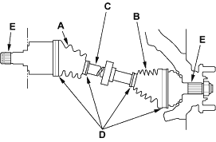
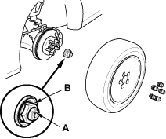
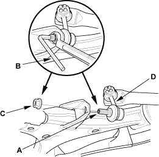

- Check the inboard boot (A) and the outboard boot (B) on the driveshaft (C) for cracks, damage, leaking grease and loose boot bands (D). If any damage is found, replace the boot and boot bands.

- Turn the driveshaft by hand and make sure the splines (E) and joint are not excessively loose.
- Make sure the driveshaft is not twisted or cracked; if it is, replace it.

Special Tool Required
Ball joint remover, 28 mm, 07MAC-SL00200
- Loosen the wheel nuts slightly.
- Raise the front of the vehicle, and support it with safety stands in the proper locations, refer to the 2001 Civic Shop Manual (see page 1-15).
- Remove the wheel nuts and front wheels.

- Lift up the locking tab (A) on the spindle nut (B), then remove the nut.
- If the driveshaft is removed, drain the transmission fluid. Reinstall the drain plug using a new washer:
- Manual transmission (see page 13-4)
- Hold the stabiliser ball joint pin (A) with a hex wrench (B) and remove the flange nut (C). Separate the front stabiliser link (D) from the lower arm.
